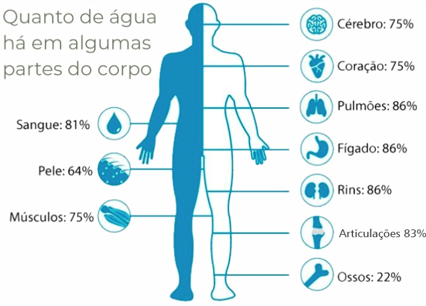
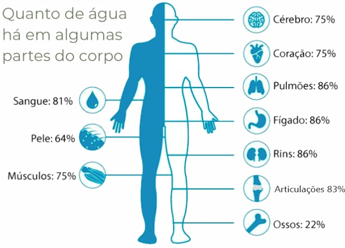

Proporcionamos diversas alternativas de alimentação e complementação, ajustadas conforme suas exigências particulares, com o objetivo de nutrir seu organismo de maneira apropriada e favorecer a harmonia nutricional.
O serviço de biopedância oferecido pelo médico permite uma análise precisa da composição corporal, fornecendo informações valiosas sobre massa magra, gordura corporal e hidratação, auxiliando no acompanhamento.
Conduzimos uma avaliação detalhada, examinando seus testes sanguíneos em busca de desequilíbrios e carências nutricionais, possibilitando uma abordagem personalizada e precisa.
Dr. Enias, graduado no Mackenzie, mestrado e doutorado na USP com mais de 35 anos de trajetória como nutricionista, traz consigo uma vasta experiência em diversas áreas da saúde e nutrição. Especializado em obesidade, nutrição esportiva e funcional, modulação intestinal e gestão de qualidade em pessoas, Dr. Enias é entusiasta em promover bem-estar, alimentação saudável e qualidade de vida.
Ao longo de sua jornada profissional, Dr. Enias acompanhou e se ajustou às mudanças significativas no campo da saúde e nutrição, mantendo sempre o foco primordial: zelar pelo bem-estar dos indivíduos.
Com uma abordagem centrada no paciente, Dr. Enias auxilia seus clientes a alcançarem seus objetivos de saúde, seja por meio da redução de peso, identificação de intolerâncias alimentares específicas ou aprimoramento geral da alimentação. Seus planos personalizados são elaborados para atender às necessidades individuais de cada pessoa, visando uma vida longa e saudável.

Nos localizamos na Rua do Oratório, 215
 
